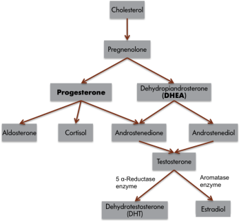

6.1: Introduction to Hormones and Behavior
This section explores the relationship between hormones and behavior. Hormones can influence various behaviors. For example, sex-hormone concentrations in the blood increase during puberty and decrease with age, particularly after 50, mirroring trends in sexual behavior. Overuse of anabolic steroid hormones is associated with aggression. While many hormones affect a range of behaviors, and many behaviors influence hormone levels, this chapter focuses on a few illustrative examples.
To understand the hormone-behavior relationship, it is important to describe hormones. Hormones are organic chemical messengers produced and released by specialized endocrine glands. Major hormone-producing structures include the pituitary, pineal, thyroid, and adrenal glands, the hypothalamus, and the gonads (male testes and female ovaries). Hormones are released from these glands into the blood, where they may travel to act on target structures at some distance from their origin. Hormones are chemical messengers similar in function to neurotransmitters, however, hormones can operate over a greater distance and longer time than neurotransmitters (Focus Topic 1).
Major classes of hormones are steroid hormones and protein or peptide hormones. Steroid hormones are generally synthesized from cholesterol in the gonads and adrenal glands. Examples include testosterone (a common type of androgen), estradiol (a common type of estrogen), progesterone (a common type of progestogen), and cortisol (a common type of glucocorticoid) (see Table 1, A-B). Protein hormones and peptide hormones are chains of amino acids; prominent examples include oxytocin, vasopressin, prolactin, and leptin.
Although neural and hormonal communication both rely on chemical signals that are similarly released and received by cells, several prominent differences exist. One major difference is where the messages can travel. Hormonal messages can reach far more destinations—they travel via the circulatory system, so can reach any cell that receives blood and cover distances up to meters. Neural messages are much more limited in where they can travel—action potentials can only travel along existing neural pathways connected by synapses, and neurotransmitters travel the short distance across the synapse (~20 nanometers).
In addition to “synaptic transmission” (across the synapse), another type of signaling in the brain is neuromodulation. In neuromodulation, chemical substances are released into the extracellular space and affect many neurons, rather than just a single postsynaptic neuron (Marder, 2012). Common neuromodulators include some neurotransmitters (e.g., dopamine, serotonin, and acetylcholine) and neurohormones made in the brain, such as oxytocin and vasopressin. When released from a cell, they can alter the firing properties and synaptic connectivity of tens of thousands of neurons.
The timing and strength of neural and hormonal messages also differ. Action potentials are all-or-none events with a rapid onset and offset, occurring in milliseconds. When neuromodulators are released, their effects are more graded and can linger for hundreds of milliseconds to several minutes. Hormonal messages may unfold over seconds or hours. Therefore, neural messages often mediate rapid changes in the body like movement, whereas hormonal messages are involved in longer-term processes such as growth, development, reproduction, and metabolism. Lastly, there is often more voluntary control of neural signals than hormonal ones. For example, moving limbs on command is easy for most, but it’s virtually impossible to will a change in thyroid-hormone levels.
| Steroid Hormones | |
| Cortisol | Increases carbohydrate metabolism; mediates stress responses |
| Estradiol | Uterine and other female tissue development; regulates sexual motivation and performance in females and males |
| Testosterone | Promotes sperm production and male secondary sexual characteristics; promotes sexual motivation and behavior, sometimes by being converted to estradiol |
| Peptides and Protein Hormones | |
| Oxytocin | Stimulates milk letdown and uterine contractions during birth; Promotes social bonding |
| Prolactin | Many actions relating to reproduction, water balance, and behavior associated with parental care |
| Thyroxine | Increases oxidation rates in tissue and affects neural development |
| Vasopressin | Increases water reabsorption in the kidney and affects learning, memory, social behavior |
Hormones coordinate the physiology and behavior of individuals by regulating, integrating, and controlling bodily functions. Over evolutionary time, hormones have often been co-opted by the nervous system to influence behavior to ensure reproductive success. For example, the same hormones, testosterone and estradiol, that cause gamete (egg or sperm) maturation also promote mating behavior. This dual hormonal function ensures that mating behavior occurs when animals have mature gametes available for fertilization. Another example of endocrine regulation of physiology and behavior is provided by pregnancy. Estrogens and progesterone concentrations are elevated during pregnancy, and these hormones are often involved in mediating maternal behavior in the mothers.
Not all cells are influenced by every hormone. Rather, a hormone can directly influence only cells with receptors specific for that hormone. Cells with these specific receptors are called target cells for the hormone. After a hormone binds to its target cell, a series of cellular events activates enzymatic pathways or turns on or off genes that regulate protein synthesis. The newly synthesized proteins may activate or deactivate other genes, causing another cascade of cellular events. Importantly, sufficient numbers of hormone receptors must be available for a hormone to produce any effects. For example, testosterone is important for male sexual behavior. If men have too little testosterone, then sexual motivation may be low, and it can be restored by testosterone treatment. However, if men have normal or elevated levels of testosterone yet display low sexual drive, then it might be caused by a lack of receptors, so treatment with additional hormones will not be effective.
To illustrate how hormones can affect behavior, let’s consider singing in zebra finches (Goodson et al., 2005). Only male zebra finches sing, and they sing to attract mates. If adult male finches have their testes removed (i.e., are castrated), then the birds reduce singing. But castrated finches regain singing behavior if their testes are reimplanted or if they are treated with either testosterone or estradiol. While androgens and estrogens are often considered ‘male’ and ‘female’ hormones respectively, testosterone, an androgen, is commonly converted to estradiol, an estrogen (Figure 1). Thus, many male-like behaviors are associated with the actions of estrogens!

The birdsong example demonstrates how hormones can affect behavior, but the reciprocal relation also occurs—behavior can affect hormone levels. For example, seeing a territorial intruder may elevate a male bird’s testosterone concentrations and thereby stimulate singing or fighting behavior. Similarly, male mice or rhesus monkeys that lose a fight decrease circulating testosterone concentrations for days or even weeks afterward. Comparable results occur in humans. Testosterone concentrations in humans are affected after physical combat, and even after simulated battles. For example, testosterone concentrations were elevated in winners and reduced in losers of regional chess tournaments.
People’s hormone concentrations can also be affected by a contest even when they are not directly involved. Researchers measured testosterone levels of male soccer fans. Brazilian and Italian fans provided saliva samples before and after watching the 1994 World Cup final. Brazil won on a last-minute penalty kick. Their fans were elated and Italian fans were dejected. Results showed that, compared to pre-game baseline values, 11 of 12 Brazilian fans had increased testosterone, and 9 of 9 Italian fans had decreased testosterone (Dabbs & Dabbs, 2000).
Hormones can be affected by anticipation of behavior. Testosterone levels are known to influence sexual motivation and behavior in women, and one study compared testosterone levels in women for three activities: sexual intercourse, cuddling, and exercise (van Anders et al., 2007). Women provided a saliva sample from pre-activity, post-activity, and the next morning. Analyses revealed that the women’s testosterone was elevated before intercourse as compared to other times, showing an anticipatory relationship between testosterone and sexual behavior. Testosterone levels were also higher post-intercourse compared to exercise, suggesting that sexual behavior may also influence hormone concentrations in women.
In sum, this section explores the bidirectional relationship between hormones and behavior, highlighting how hormones like testosterone and estradiol can influence behaviors such as singing in birds and sexual motivation in humans. While hormones can affect behavior, behaviors and even the anticipation of events can also impact hormone levels, as seen in studies involving competition and sexual activities. The field of neuroendocrinology, which studies the interface between the endocrine and nervous systems, is likely to yield significant insights into the hormone-behavior relationship.
Focus Topic 2: Bisphenol A (BPA) and Endocrine Disruption
You may have heard about the effects of bisphenol A (BPA), a chemical used in many plastic food-storage containers, drinking cups, aluminum cans, and other products. Research suggests BPA is an endocrine disruptor, meaning that it interferes with the endocrine system. BPA mimics estrogens, and is particularly disruptive during prenatal and postnatal development.
The U.S. Food and Drug Administration (FDA) acknowledges concerns about BPA’s potential effects on the brain, behavior, and prostate gland in fetuses, infants, and young children. In response, many US companies have removed BPA from baby products, and both Canada and the European Union have banned its use in these items. You’ll now often see reusable water bottles boast “BPA free.”
Studies in animals and humans have linked BPA exposure to various health issues, including developmental delays, altered thyroid signaling, sexual dysfunction, changes in brain structure and function, and increased cancer risks. However, some experts caution that more research is needed. In the meantime, the FDA recommends that consumers limit their exposure to BPA. In addition to purchasing foods in BPA-free packaging, consumers should avoid storing foods or liquids in containers with the recycling code 3 or 7. Foods and liquids should not be microwaved in any form of plastic: use paper, glass, or ceramics instead.
In addition to BPA, hundreds of other chemicals are considered endocrine disruptors with possible health risks to humans and other animals (NIEHS, n.d.). Well-studied chemicals that could disrupt your endocrine system (e.g., Atrazine, Dioxins, Phthalates, PFAS, PCBs, and Triclosan) are found in many everyday products, including some cosmetics, toys, packaging, non-stick pans, textile coatings, flame retardants, carpet, and pesticides. These chemicals end up in the environment and contact may occur through air, diet, skin, and water. Even in low levels, endocrine disruptors can interfere with normal hormone function. Exposure is linked to health problems affecting the immune system, puberty (e.g., premature onset in girls and breast development in boys), reproduction (e.g., sexual dysfunction and reduced fertility), nervous system and psychological functioning (e.g., increased neurotoxicity, ADHD risk, memory issues), and cancer risk. Endocrine-disrupting chemicals cannot be completely avoided or removed; however, you can make informed choices to reduce exposure and risk of potential health effects.
Text Attributions
Parts of this section were adapted from:
Nelson, R. J. (2023). Hormones & behavior. In R. Biswas-Diener & E. Diener (Eds), Noba Textbook Series: Psychology. Champaign, IL: DEF publishers. Retrieved from http://noba.to/c6gvwu9m
Betts, J. G., Young, K. A., Wise, J. A., Johnson, E., Poe, B., Kruse, D. H., Korol, O., Jonhson, J. E., Womble, M., & DeSaix, P. (2022). 17.2 Hormones. In Anatomy and Physiology 2e. OpenStax. Access for free at https://openstax.org/books/anatomy-and-physiology-2e/pages/17-2-hormones
National Institute of Environmental Health Sciences (NIEHS) (n.d.). Endocrine Disruptors. https://www.niehs.nih.gov/health/topics/agents/endocrine
Media Attributions
- Biochemical pathway steroid © Noba is licensed under a CC BY-SA (Attribution ShareAlike) license
- Couple holding hands © Noba is licensed under a Public Domain license


An organic chemical messenger released from endocrine cells that travels through the blood to interact with target cells at some distance to cause a biological response.
A ductless gland from which hormones are released into the blood system in response to specific biological signals.
Chemical substance released by the presynaptic terminal button that acts on the postsynaptic cell.
The primary androgen secreted by the testes of most vertebrate animals, including men.
A primary progestin that is involved in pregnancy and mating behaviors.
A peptide hormone secreted by the pituitary gland to trigger lactation, as well as social bonding.
A protein hormone that is highly conserved throughout the animal kingdom. It has many biological functions associated with reproduction and synergistic actions with steroid hormones.
the process by which neurons use chemical signals (e.g., some neurotransmitters) to bias many neurons, resulting in changes to neuronal properties such as firing activity and synaptic connectivity.
Parental behavior performed by the mother.
A chemical structure on the cell surface or inside of a cell that has an affinity for a specific chemical configuration of a hormone, neurotransmitter, or other compound.
A cell that has receptors for a specific chemical messenger (hormone or neurotransmitter).